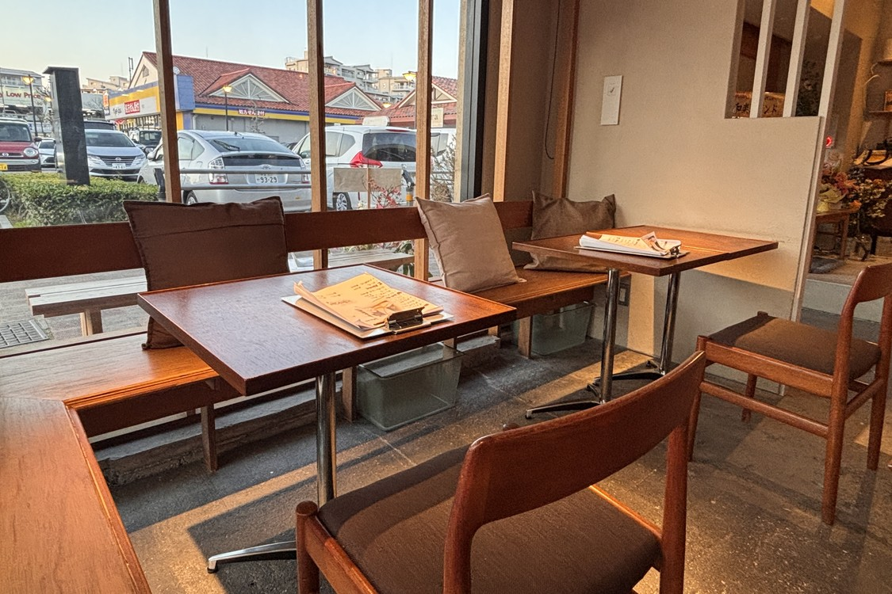
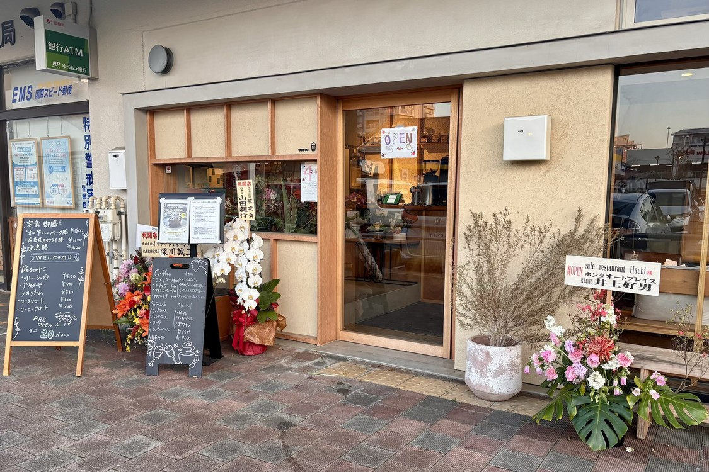

CAFE RESTAURANT / MINAMI-OSAWA
犬と、わたしと、
やさしい時間。
南大沢の街角で、きちんとしたごはんと
ほっとできるひとときを。

01窓辺で過ごす、いつもの時間
ALL DAYWITH DOGわんちゃん連れ
オールタイムOK
オールタイムOK
01
ABOUT HACHi
愛犬とくつろぐダイニングカフェ
おなかも、気持ちも、
ちゃんと満たせる場所。
ひとりのランチも、家族との食事も、愛犬とのお散歩の途中も。HacHiは、誰かと一緒の日にも、少しゆっくりしたい日にも立ち寄れるカフェレストランです。
木のぬくもりがある店内で、やさしいごはんと居心地のよい時間をご用意しています。
02
FOOD & CAFE
毎日にうれしい、
やさしいごはん。
主菜にごはん、汁物、小鉢を添えた食事や、カフェでひと息つけるメニューを。内容は季節や仕入れにより変わるため、その日の情報はInstagramでお知らせしています。
OPEN10:00
LUNCH11:30 — 14:00
CLOSE19:00金・土は20:00
03
WITH YOUR DOG
愛犬も、大切な家族だから。
いっしょに店内で、
いっしょにごはん。
わんちゃんは時間帯を問わず店内へ。国産素材を使った手作りのわんちゃん用ごはんも用意されています。
- 01店内オールタイム同伴OK
- 02手作りのわんちゃん用メニュー
- 03入店ルールはご来店前にInstagramで確認

この木枠の入口が目印です04
VISIT US
街のお散歩の、
行き先に。
- 住所
- 東京都八王子市南大沢5丁目14-4-5
南大沢五丁目商店街 - 営業時間
- 10:00〜19:00
金・土曜日 10:00〜20:00 - ランチ
- 11:30〜14:00
- お休み
- 営業カレンダーをInstagramでご確認ください
@HACHI_MINAMIOSAWA
今日のHacHiは、
Instagramから。
営業日、季節のメニュー、わんちゃんのお客さま。最新のお知らせはこちらでご覧いただけます。
Instagramを見る↗